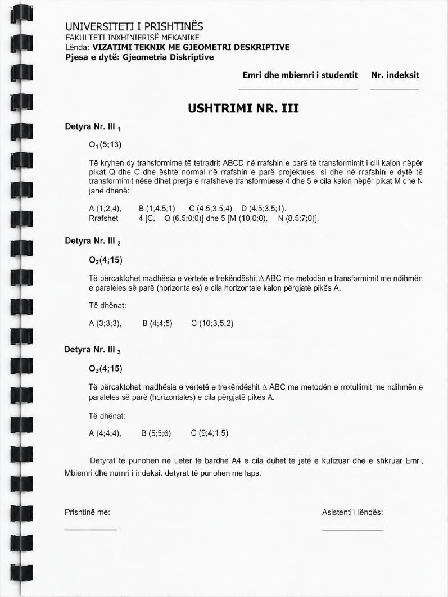
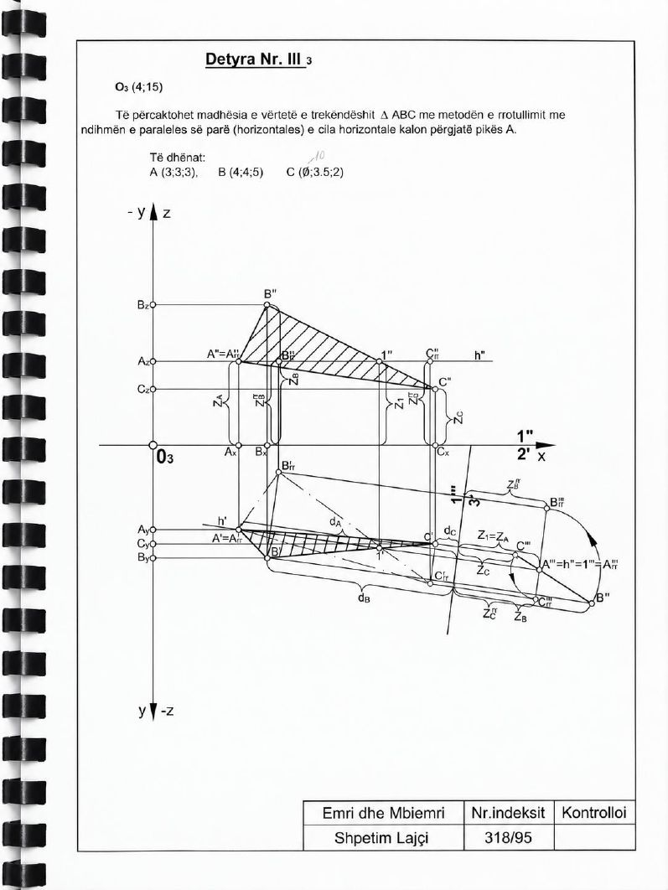

Animacioni
▶
Animacioni për këtë detyrë është në përgatitje.
Ndërkohë shiko zgjidhjen nga libri më poshtë.
Faqet e librit


Madhësia e vërtetë e trekëndëshit ABC me rrotullim
Të përcaktohet madhësia e vërtetë e trekëndëshit ABC me metodën e rrotullimit, me ndihmën e paraleles së parë (horizontales) e cila kalon përgjatë pikës A.
Të dhënat: O₃ (4; 15); A (4; 4; 4), B (5; 5; 6), C (9; 4; 1,5)
Animacioni për këtë detyrë është në përgatitje.
Ndërkohë shiko zgjidhjen nga libri më poshtë.

